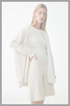
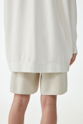

RECYCLED POLYESTER PERFORMANCE PARKA
$135
Crafted from an organic cotton-mulberry silk mix, this oversized cardigan features a elasticated body and dropped shoulder. Effortlessly style with tonal shorts and pumps.
- Relaxed fit
- Dropped shoulder
- Elasticated body
- Ribbed cuff
32% Polyamide, 29% Viscose, 23% Mulberry silk, 15% Organic cotton, 1% Elastane / Machine washable
Back length of size XS/S is 70cm
32% Polyamide / 29% Viscose / 23% Silk / 15% Cotton / 1% Elastane / Machine washable
Make sure that your favourite items remain long-loved pieces for years to come; read our product care guide and explore our selection of carefully chosen care products.
Product No: 0930647001